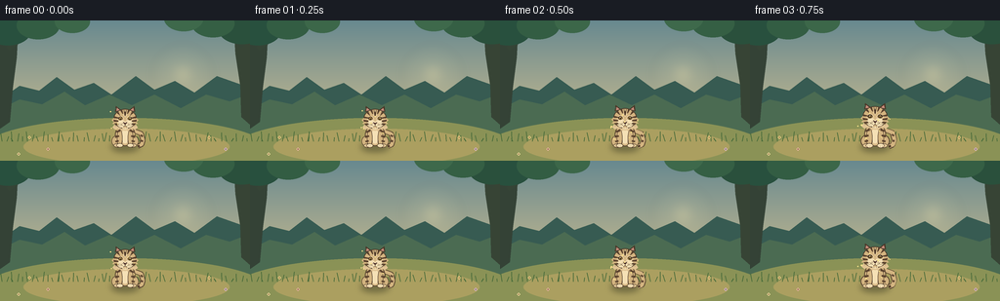
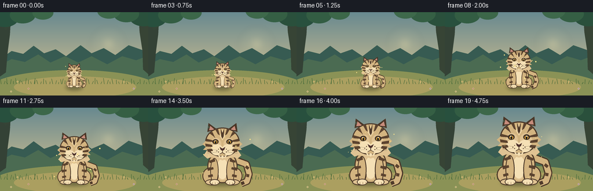

CODING AGENTS AS PIXEL WORLD MODELS
traex/GPT-5.6-Sol · instance_preservation_0053
点击播放 · 原生 RGB 像素
逐轮保存的候选
回放视频、检查图与代码变化。
每份候选均可单独播放。实际图片检查记录在下方工具轨迹中。
候选 01播放与检查图
点击播放 · 原生 RGB 像素


展开代码变化
--- 上一保存版本
+++ 本次保存版本
@@ -0,0 +1,169 @@
+from pathlib import Path
+import math
+import numpy as np
+from PIL import Image, ImageDraw, ImageFilter
+import artifact_io
+
+W,H,N = 256,144,20
+SS=4
+
+def S(v): return int(round(v*SS))
+def bbox(b): return tuple(S(v) for v in b)
+def pts(p): return [(S(x),S(y)) for x,y in p]
+
+def smooth(x):
+ x=max(0,min(1,x)); return x*x*(3-2*x)
+
+def draw_background(frame):
+ # Soft storybook forest clearing; deliberately stable so growth is unmistakable.
+ im=Image.new('RGB',(W*SS,H*SS))
+ a=np.zeros((H*SS,W*SS,3),dtype=np.uint8)
+ for y in range(H*SS):
+ q=y/(H*SS-1)
+ # warm dawn gradient
+ top=np.array([104,137,143.]); bot=np.array([229,202,143.])
+ col=top*(1-q)+bot*q
+ a[y,:,:]=np.clip(col,0,255)
+ im=Image.fromarray(a)
+ d=ImageDraw.Draw(im,'RGBA')
+ # distant glowing sun
+ glow=Image.new('RGBA',im.size,(0,0,0,0)); gd=ImageDraw.Draw(glow,'RGBA')
+ for r,al in [(31,8),(23,12),(15,22),(8,70)]:
+ gd.ellipse(bbox((187-r,55-r,187+r,55+r)),fill=(255,239,181,al))
+ glow=glow.filter(ImageFilter.GaussianBlur(S(5))); im=Image.alpha_composite(im.convert('RGBA'),glow)
+ d=ImageDraw.Draw(im,'RGBA')
+ # layered hills / shrubs
+ d.polygon(pts([(0,81),(20,67),(40,72),(58,58),(76,71),(96,64),(114,76),(139,57),(158,71),(179,62),(199,74),(222,57),(256,69),(256,144),(0,144)]),fill=(55,91,82,130))
+ d.polygon(pts([(0,91),(20,81),(43,86),(66,73),(87,87),(112,76),(135,87),(158,76),(185,90),(211,76),(235,83),(256,75),(256,144),(0,144)]),fill=(75,107,82,210))
+ # tree trunks framing, branches, foliage
+ d.polygon(pts([(0,0),(19,0),(17,38),(13,69),(10,104),(0,111)]),fill=(52,66,54,230))
+ d.polygon(pts([(256,0),(239,0),(241,34),(246,67),(247,99),(256,107)]),fill=(55,68,53,225))
+ d.line(pts([(8,29),(38,7),(70,2)]),fill=(53,68,54,225),width=S(5))
+ d.line(pts([(249,27),(224,8),(196,2)]),fill=(53,68,54,225),width=S(5))
+ for x,y,r,c in [(8,10,24,(40,80,62,220)),(39,5,22,(51,93,67,225)),(74,1,18,(60,103,73,215)),(248,8,25,(42,80,60,225)),(218,3,22,(53,95,68,225)),(188,-2,20,(62,105,75,200))]:
+ d.ellipse(bbox((x-r,y-r*.65,x+r,y+r*.65)),fill=c)
+ # clearing ground
+ d.ellipse(bbox((-20,100,276,167)),fill=(138,146,86,255))
+ d.ellipse(bbox((24,111,235,148)),fill=(171,159,96,160))
+ # grass blades and tiny flowers
+ for i in range(52):
+ x=(i*47+13)%256; base=124+(i*19)%19; ht=3+(i*7)%8
+ sway=math.sin(frame*.20+i)*0.45
+ d.line(pts([(x,base),(x+sway+(i%3-1)*1.7,base-ht)]),fill=(66,104,56,190),width=S(.65))
+ for x,y,col in [(30,120,(245,218,139,230)),(49,132,(235,184,165,220)),(214,120,(244,219,139,230)),(231,132,(217,189,220,220)),(19,137,(242,224,160,210))]:
+ d.ellipse(bbox((x-1.4,y-1,x+1.4,y+1)),fill=col)
+ d.ellipse(bbox((x-.8,y-1.5,x+.8,y+1.5)),fill=col)
+ d.ellipse(bbox((x-.45,y-.45,x+.45,y+.45)),fill=(120,84,53,240))
+ return im
+
+def tiger_layer(scale, frame):
+ lay=Image.new('RGBA',(W*SS,H*SS),(0,0,0,0)); d=ImageDraw.Draw(lay,'RGBA')
+ ox,base=128,128
+ # fixed model transforms preserve the very same individual while it grows
+ bob=math.sin(frame*0.62)*0.45*scale
+ def P(x,y): return (S(ox+x*scale),S(base+y*scale+bob))
+ def PP(seq): return [P(x,y) for x,y in seq]
+ def E(b,fill,outline=None,w=1):
+ bb=(P(b[0],b[1])[0],P(b[0],b[1])[1],P(b[2],b[3])[0],P(b[2],b[3])[1])
+ d.ellipse(bb,fill=fill,outline=outline,width=max(1,S(w*scale)))
+ def L(seq,fill,w): d.line(PP(seq),fill=fill,width=max(1,S(w*scale)),joint='curve')
+ def Poly(seq,fill): d.polygon(PP(seq),fill=fill)
+ outline=(74,55,40,255); dark=(79,58,42,255); stripe=(91,67,47,255)
+ fur=(211,180,128,255); fur2=(224,195,147,255); cream=(245,224,181,255)
+ # tail behind body: curling right, beige core bordered in brown
+ L([(22,-40),(43,-32),(48,-14),(44,-1),(34,3)],outline,13)
+ L([(22,-40),(43,-32),(48,-14),(44,-1),(34,3)],fur,9.5)
+ # tail bands and tip
+ L([(42,-28),(47,-24)],stripe,5); L([(46,-14),(45,-9)],stripe,5); L([(39,1),(34,3)],dark,6)
+ # seated body silhouette
+ E((-27,-57,27,2),fur,outline,1.8)
+ # belly highlight
+ E((-15,-48,15,-3),fur2,None)
+ E((-10,-42,10,-5),cream,None)
+ # haunches and paws
+ E((-36,-26,-7,4),fur,outline,1.6); E((7,-26,36,4),fur,outline,1.6)
+ E((-31,-5,-5,6),fur2,outline,1.4); E((5,-5,31,6),fur2,outline,1.4)
+ # forelegs
+ E((-22,-43,-7,3),fur,outline,1.4); E((7,-43,22,3),fur,outline,1.4)
+ E((-23,-5,-5,6),cream,outline,1.2); E((5,-5,23,6),cream,outline,1.2)
+ # toes
+ for x in [-18,-13,-8,8,13,18]: L([(x,1),(x,4)],(145,112,78,230),.75)
+ # body/leg stripe bands
+ for side in [-1,1]:
+ Poly([(side*14,-42),(side*24,-38),(side*23,-34),(side*13,-37)],stripe)
+ Poly([(side*17,-27),(side*27,-24),(side*26,-20),(side*16,-23)],stripe)
+ Poly([(side*18,-14),(side*26,-12),(side*25,-8),(side*17,-10)],stripe)
+ # neck ruff behind head
+ Poly([(-27,-58),(-34,-48),(-27,-42),(-19,-45),(0,-39),(19,-45),(27,-42),(34,-48),(27,-58)],fur2)
+ # ears (same characteristic left ear notch)
+ Poly([(-27,-90),(-25,-106),(-10,-95)],outline); Poly([(27,-90),(25,-106),(10,-95)],outline)
+ Poly([(-24,-93),(-22,-101),(-14,-94)],(199,140,123,255)); Poly([(24,-93),(22,-101),(14,-94)],(199,140,123,255))
+ # tiny notch cutout on outer left ear is a persistent identity cue
+ Poly([(-26,-101),(-23,-99),(-25,-96)],(73,92,74,255))
+ # head and cheek fluffs
+ E((-31,-98,31,-45),fur,outline,1.8)
+ Poly([(-30,-74),(-36,-68),(-30,-63),(-35,-58),(-24,-57),(-18,-65)],fur)
+ Poly([(30,-74),(36,-68),(30,-63),(35,-58),(24,-57),(18,-65)],fur)
+ # brow and muzzle patches
+ E((-21,-79,-2,-58),fur2,None); E((2,-79,21,-58),fur2,None)
+ E((-21,-68,1,-48),cream,None); E((-1,-68,21,-48),cream,None)
+ # forehead cream blaze, persistent teardrop
+ Poly([(0,-94),(-5,-83),(0,-75),(5,-83)],(236,211,163,255))
+ # forehead stripes: central chevron + paired temples
+ Poly([(-3,-96),(0,-88),(3,-96),(2,-82),(0,-78),(-2,-82)],dark)
+ Poly([(-13,-95),(-8,-86),(-5,-84),(-8,-96)],stripe)
+ Poly([(13,-95),(8,-86),(5,-84),(8,-96)],stripe)
+ Poly([(-25,-89),(-16,-82),(-13,-79),(-18,-90)],stripe)
+ Poly([(25,-89),(16,-82),(13,-79),(18,-90)],stripe)
+ # cheek stripes
+ for sy in [-1,1]:
+ Poly([(sy*29,-78),(sy*18,-75),(sy*16,-72),(sy*29,-73)],stripe)
+ Poly([(sy*31,-69),(sy*19,-67),(sy*18,-63),(sy*30,-64)],stripe)
+ Poly([(sy*28,-59),(sy*19,-60),(sy*17,-56),(sy*26,-54)],stripe)
+ # eyes, warm amber irises and highlights
+ E((-18,-77,-7,-68),(61,49,39,255),None)
+ E((7,-77,18,-68),(61,49,39,255),None)
+ E((-15.5,-75,-9,-69),(200,146,54,255),None); E((9,-75,15.5,-69),(200,146,54,255),None)
+ E((-13.6,-74,-11,-69),(25,27,24,255),None); E((11,-74,13.6,-69),(25,27,24,255),None)
+ E((-14.1,-74.8,-12.4,-73.1),(255,250,218,255),None); E((11.9,-74.8,13.6,-73.1),(255,250,218,255),None)
+ # nose, mouth
+ Poly([(-5,-63),(0,-60),(5,-63),(3,-58),(0,-56),(-3,-58)],(76,49,43,255))
+ L([(0,-56),(0,-53)],dark,1.1); L([(0,-53),(-5,-50)],dark,1); L([(0,-53),(5,-50)],dark,1)
+ # whisker dots and whiskers
+ for sx in [-1,1]:
+ for x,y in [(7,-59),(10,-56),(7,-54)]: E((sx*x-0.7,y-.7,sx*x+.7,y+.7),dark,None)
+ L([(sx*9,-57),(sx*25,-59)],(91,75,57,180),.55)
+ L([(sx*9,-54),(sx*27,-52)],(91,75,57,160),.55)
+ # chest tufts atop body
+ Poly([(-10,-52),(-5,-43),(0,-48),(5,-43),(10,-52),(0,-42)],cream)
+ return lay
+
+def make_frame(i):
+ t=i/(N-1)
+ # Monotonic, readable transformation. Early and late holds make endpoint states clear.
+ g=smooth((t-.04)/.92)
+ scale=.38 + .68*g
+ bg=draw_background(i)
+ # ground shadow grows with tiger, anchoring rather than appearing as a camera zoom
+ sh=Image.new('RGBA',bg.size,(0,0,0,0)); sd=ImageDraw.Draw(sh,'RGBA')
+ sw=24*scale+5; sy=128
+ sd.ellipse(bbox((128-sw,sy-3,128+sw,sy+6)),fill=(49,54,35,90))
+ sh=sh.filter(ImageFilter.GaussianBlur(S(3.2)))
+ comp=Image.alpha_composite(bg.convert('RGBA'),sh)
+ comp=Image.alpha_composite(comp,tiger_layer(scale,i))
+ # restrained golden motes emphasize magical growth without obscuring silhouette
+ md=ImageDraw.Draw(comp,'RGBA')
+ intensity=math.sin(math.pi*t)
+ for k in range(9):
+ x=128 + math.sin(k*2.31+i*.17)*(31+3*k)*scale
+ y=122 - ((i*2.0+k*15)%78)*scale
+ r=(.55+(k%3)*.25)*(0.5+0.6*intensity)
+ md.ellipse(bbox((x-r,y-r,x+r,y+r)),fill=(255,230,139,int(80+90*intensity)))
+ out=comp.convert('RGB').resize((W,H),Image.Resampling.LANCZOS)
+ return np.asarray(out,dtype=np.uint8)
+
+def main():
+ frames=np.stack([make_frame(i) for i in range(N)],axis=0)
+ artifact_io.save(frames,Path(__file__).resolve().parent)
+
+if __name__=='__main__': main()
可观测工具轨迹
实际执行的命令与返回图片。
命令 1exit 0
/bin/bash -lc "cat prompt.txt && printf '\\n---RULES---\\n' && cat GENERATION_RULES.md && printf '\\n---SPEC---\\n' && cat task_spec.json"
命令 2exit 0
/bin/bash -lc "find . -maxdepth 2 -type f -printf '%p %s bytes\\n' | sort | head -200"
命令 3exit 0
/bin/bash -lc "sed -n '1,240p' artifact_io.py"
命令 4exit 0
/bin/bash -lc "cat > generate.py <<'PY'
from pathlib import Path
import math
import numpy as np
from PIL import Image, ImageDraw, ImageFilter
import artifact_io
W,H,N = 256,144,20
SS=4
def S(v): return int(round(v*SS))
def bbox(b): return tuple(S(v) for v in b)
def pts(p): return [(S(x),S(y)) for x,y in p]
def smooth(x):
x=max(0,min(1,x)); return x*x*(3-2*x)
def draw_background(frame):
# Soft storybook forest clearing; deliberately stable so growth is unmistakable.
im=Image.new('RGB',(W*SS,H*SS))
a=np.zeros((H*SS,W*SS,3),dtype=np.uint8)
for y in range(H*SS):
q=y/(H*SS-1)
# warm dawn gradient
top=np.array([104,137,143.]); bot=np.array([229,202,143.])
col=top*(1-q)+bot*q
a[y,:,:]=np.clip(col,0,255)
im=Image.fromarray(a)
d=ImageDraw.Draw(im,'RGBA')
# distant glowing sun
glow=Image.new('RGBA',im.size,(0,0,0,0)); gd=ImageDraw.Draw(glow,'RGBA')
for r,al in [(31,8),(23,12),(15,22),(8,70)]:
gd.ellipse(bbox((187-r,55-r,187+r,55+r)),fill=(255,239,181,al))
glow=glow.filter(ImageFilter.GaussianBlur(S(5))); im=Image.alpha_composite(im.convert('RGBA'),glow)
d=ImageDraw.Draw(im,'RGBA')
# layered hills / shrubs
d.polygon(pts([(0,81),(20,67),(40,72),(58,58),(76,71),(96,64),(114,76),(139,57),(158,71),(179,62),(199,74),(222,57),(256,69),(256,144),(0,144)]),fill=(55,91,82,130))
d.polygon(pts([(0,91),(20,81),(43,86),(66,73),(87,87),(112,76),(135,87),(158,76),(185,90),(211,76),(235,83),(256,75),(256,144),(0,144)]),fill=(75,107,82,210))
# tree trunks framing, branches, foliage
d.polygon(pts([(0,0),(19,0),(17,38),(13,69),(10,104),(0,111)]),fill=(52,66,54,230))
d.polygon(pts([(256,0),(239,0),(241,34),(246,67),(247,99),(256,107)]),fill=(55,68,53,225))
d.line(pts([(8,29),(38,7),(70,2)]),fill=(53,68,54,225),width=S(5))
d.line(pts([(249,27),(224,8),(196,2)]),fill=(53,68,54,225),width=S(5))
for x,y,r,c in [(8,10,24,(40,80,62,220)),(39,5,22,(51,93,67,225)),(74,1,18,(60,103,73,215)),(248,8,25,(42,80,60,225)),(218,3,22,(53,95,68,225)),(188,-2,20,(62,105,75,200))]:
d.ellipse(bbox((x-r,y-r*.65,x+r,y+r*.65)),fill=c)
# clearing ground
d.ellipse(bbox((-20,100,276,167)),fill=(138,146,86,255))
d.ellipse(bbox((24,111,235,148)),fill=(171,159,96,160))
# grass blades and tiny flowers
for i in range(52):
x=(i*47+13)%256; base=124+(i*19)%19; ht=3+(i*7)%8
sway=math.sin(frame*.20+i)*0.45
d.line(pts([(x,base),(x+sway+(i%3-1)*1.7,base-ht)]),fill=(66,104,56,190),width=S(.65))
for x,y,col in [(30,120,(245,218,139,230)),(49,132,(235,184,165,220)),(214,120,(244,219,139,230)),(231,132,(217,189,220,220)),(19,137,(242,224,160,210))]:
d.ellipse(bbox((x-1.4,y-1,x+1.4,y+1)),fill=col)
d.ellipse(bbox((x-.8,y-1.5,x+.8,y+1.5)),fill=col)
d.ellipse(bbox((x-.45,y-.45,x+.45,y+.45)),fill=(120,84,53,240))
return im
def tiger_layer(scale, frame):
lay=Image.new('RGBA',(W*SS,H*SS),(0,0,0,0)); d=ImageDraw.Draw(lay,'RGBA')
ox,base=128,128
# fixed model transforms preserve the very same individual while it grows
bob=math.sin(frame*0.62)*0.45*scale
def P(x,y): return (S(ox+x*scale),S(base+y*scale+bob))
def PP(seq): return [P(x,y) for x,y in seq]
def E(b,fill,outline=None,w=1):
bb=(P(b[0],b[1])[0],P(b[0],b[1])[1],P(b[2],b[3])[0],P(b[2],b[3])[1])
d.ellipse(bb,fill=fill,outline=outline,width=max(1,S(w*scale)))
def L(seq,fill,w): d.line(PP(seq),fill=fill,width=max(1,S(w*scale)),joint='curve')
def Poly(seq,fill): d.polygon(PP(seq),fill=fill)
outline=(74,55,40,255); dark=(79,58,42,255); stripe=(91,67,47,255)
fur=(211,180,128,255); fur2=(224,195,147,255); cream=(245,224,181,255)
# tail behind body: curling right, beige core bordered in brown
L([(22,-40),(43,-32),(48,-14),(44,-1),(34,3)],outline,13)
L([(22,-40),(43,-32),(48,-14),(44,-1),(34,3)],fur,9.5)
# tail bands and tip
L([(42,-28),(47,-24)],stripe,5); L([(46,-14),(45,-9)],stripe,5); L([(39,1),(34,3)],dark,6)
# seated body silhouette
E((-27,-57,27,2),fur,outline,1.8)
# belly highlight
E((-15,-48,15,-3),fur2,None)
E((-10,-42,10,-5),cream,None)
# haunches and paws
E((-36,-26,-7,4),fur,outline,1.6); E((7,-26,36,4),fur,outline,1.6)
E((-31,-5,-5,6),fur2,outline,1.4); E((5,-5,31,6),fur2,outline,1.4)
# forelegs
E((-22,-43,-7,3),fur,outline,1.4); E((7,-43,22,3),fur,outline,1.4)
E((-23,-5,-5,6),cream,outline,1.2); E((5,-5,23,6),cream,outline,1.2)
# toes
for x in [-18,-13,-8,8,13,18]: L([(x,1),(x,4)],(145,112,78,230),.75)
# body/leg stripe bands
for side in [-1,1]:
Poly([(side*14,-42),(side*24,-38),(side*23,-34),(side*13,-37)],stripe)
Poly([(side*17,-27),(side*27,-24),(side*26,-20),(side*16,-23)],stripe)
Poly([(side*18,-14),(side*26,-12),(side*25,-8),(side*17,-10)],stripe)
# neck ruff behind head
Poly([(-27,-58),(-34,-48),(-27,-42),(-19,-45),(0,-39),(19,-45),(27,-42),(34,-48),(27,-58)],fur2)
# ears (same characteristic left ear notch)
Poly([(-27,-90),(-25,-106),(-10,-95)],outline); Poly([(27,-90),(25,-106),(10,-95)],outline)
Poly([(-24,-93),(-22,-101),(-14,-94)],(199,140,123,255)); Poly([(24,-93),(22,-101),(14,-94)],(199,140,123,255))
# tiny notch cutout on outer left ear is a persistent identity cue
Poly([(-26,-101),(-23,-99),(-25,-96)],(73,92,74,255))
# head and cheek fluffs
E((-31,-98,31,-45),fur,outline,1.8)
Poly([(-30,-74),(-36,-68),(-30,-63),(-35,-58),(-24,-57),(-18,-65)],fur)
Poly([(30,-74),(36,-68),(30,-63),(35,-58),(24,-57),(18,-65)],fur)
# brow and muzzle patches
E((-21,-79,-2,-58),fur2,None); E((2,-79,21,-58),fur2,None)
E((-21,-68,1,-48),cream,None); E((-1,-68,21,-48),cream,None)
# forehead cream blaze, persistent teardrop
Poly([(0,-94),(-5,-83),(0,-75),(5,-83)],(236,211,163,255))
# forehead stripes: central chevron + paired temples
Poly([(-3,-96),(0,-88),(3,-96),(2,-82),(0,-78),(-2,-82)],dark)
Poly([(-13,-95),(-8,-86),(-5,-84),(-8,-96)],stripe)
Poly([(13,-95),(8,-86),(5,-84),(8,-96)],stripe)
Poly([(-25,-89),(-16,-82),(-13,-79),(-18,-90)],stripe)
Poly([(25,-89),(16,-82),(13,-79),(18,-90)],stripe)
# cheek stripes
for sy in [-1,1]:
Poly([(sy*29,-78),(sy*18,-75),(sy*16,-72),(sy*29,-73)],stripe)
Poly([(sy*31,-69),(sy*19,-67),(sy*18,-63),(sy*30,-64)],stripe)
Poly([(sy*28,-59),(sy*19,-60),(sy*17,-56),(sy*26,-54)],stripe)
# eyes, warm amber irises and highlights
E((-18,-77,-7,-68),(61,49,39,255),None)
E((7,-77,18,-68),(61,49,39,255),None)
E((-15.5,-75,-9,-69),(200,146,54,255),None); E((9,-75,15.5,-69),(200,146,54,255),None)
E((-13.6,-74,-11,-69),(25,27,24,255),None); E((11,-74,13.6,-69),(25,27,24,255),None)
E((-14.1,-74.8,-12.4,-73.1),(255,250,218,255),None); E((11.9,-74.8,13.6,-73.1),(255,250,218,255),None)
# nose, mouth
Poly([(-5,-63),(0,-60),(5,-63),(3,-58),(0,-56),(-3,-58)],(76,49,43,255))
L([(0,-56),(0,-53)],dark,1.1); L([(0,-53),(-5,-50)],dark,1); L([(0,-53),(5,-50)],dark,1)
# whisker dots and whiskers
for sx in [-1,1]:
for x,y in [(7,-59),(10,-56),(7,-54)]: E((sx*x-0.7,y-.7,sx*x+.7,y+.7),dark,None)
L([(sx*9,-57),(sx*25,-59)],(91,75,57,180),.55)
L([(sx*9,-54),(sx*27,-52)],(91,75,57,160),.55)
# chest tufts atop body
Poly([(-10,-52),(-5,-43),(0,-48),(5,-43),(10,-52),(0,-42)],cream)
return lay
def make_frame(i):
t=i/(N-1)
# Monotonic, readable transformation. Early and late holds make endpoint states clear.
g=smooth((t-.04)/.92)
scale=.38 + .68*g
bg=draw_background(i)
# ground shadow grows with tiger, anchoring rather than appearing as a camera zoom
sh=Image.new('RGBA',bg.size,(0,0,0,0)); sd=ImageDraw.Draw(sh,'RGBA')
sw=24*scale+5; sy=128
sd.ellipse(bbox((128-sw,sy-3,128+sw,sy+6)),fill=(49,54,35,90))
sh=sh.filter(ImageFilter.GaussianBlur(S(3.2)))
comp=Image.alpha_composite(bg.convert('RGBA'),sh)
comp=Image.alpha_composite(comp,tiger_layer(scale,i))
# restrained golden motes emphasize magical growth without obscuring silhouette
md=ImageDraw.Draw(comp,'RGBA')
intensity=math.sin(math.pi*t)
for k in range(9):
x=128 + math.sin(k*2.31+i*.17)*(31+3*k)*scale
y=122 - ((i*2.0+k*15)%78)*scale
r=(.55+(k%3)*.25)*(0.5+0.6*intensity)
md.ellipse(bbox((x-r,y-r,x+r,y+r)),fill=(255,230,139,int(80+90*intensity)))
out=comp.convert('RGB').resize((W,H),Image.Resampling.LANCZOS)
return np.asarray(out,dtype=np.uint8)
def main():
frames=np.stack([make_frame(i) for i in range(N)],axis=0)
artifact_io.save(frames,Path(__file__).resolve().parent)
if __name__=='__main__': main()
PY
python generate.py
ls -lh pixels.npz inspection.png transition_check.png index.html frames/00.png frames/19.png"视觉工具实际返回图片 1

保存候选 1 份；完成命令 4 次；可验证图片返回 1 张。原始 API 响应与完整日志保留在本地。